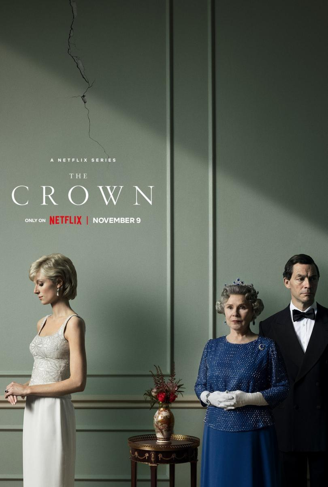

The Crown

Resumen
The Crown retrata la vida de la reina Isabel II desde su boda en 1947 con Felipe, duque de Edimburgo, hasta principios del siglo XXI. Claire Foy interpreta a Isabel en la primera y segunda temporada, y Olivia Colman en la tercera y cuarta. Foy regresó para un breve cameo en una escena analepsis en la cuarta temporada. Imelda Staunton interpretará a la reina en la quinta y sexta temporada.Reparto principal